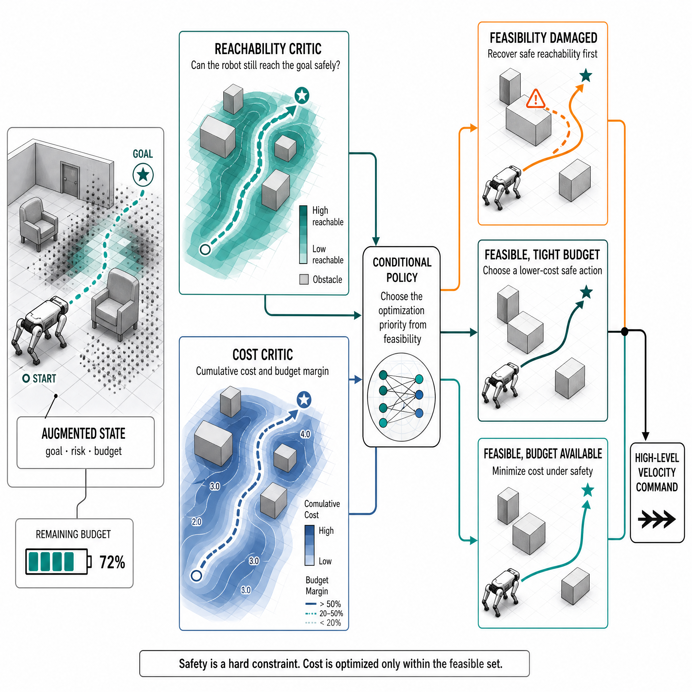

增广状态
将任务进展、局部风险、剩余预算和执行偏差编入高层状态，使策略能看见安全与成本的共同边界。
面向复杂真实环境的预算感知、安全四足机器人自主导航
AGIROS 实机演示：高层预算条件化导航策略输出速度命令，低层鲁棒速度跟踪策略完成闭环执行。
复杂环境中的四足机器人导航需要同时满足目标到达、全程避障与执行成本最小化；
传统 Reward Weighting 将安全与效率退化为难以调节的偏好，CMDP 的固定成本阈值又难以刻画不同状态下的预算可行性。
我们将该任务统一建模为 Minimum-Cost Reach-Avoid（MCRA）问题：在增广状态中联合表示任务状态、安全演化与剩余预算，并以轨迹级约束显式定义“安全到达且不超支”。
在理论层面，HD-MCRA 分别学习可达-规避价值与累计成本价值，并以预算为条件训练高层策略：策略在可行区域内优先降低成本，在可行性受损时优先恢复安全到达能力。
在执行层面，冻结的鲁棒低层速度跟踪器将高维关节控制抽象为稳定的闭环速度接口，使 MCRA 能够在低维导航空间中学习与部署；由实测闭环数据估计的成本裕度 alpha 与安全裕度 delta，进一步补偿成本超支和轨迹偏移。
在困难 IsaacGym 场景中，HD-MCRA 相较传统方法将导航成功率提升约 20%，执行成本降低约 30%；AGIROS 实机展示验证了该方法在真实四足机器人上的闭环运行能力。
Reward Weighting 以奖励权重间接平衡到达、安全与效率，硬约束因而退化为需要反复调节的软偏好；
CMDP 依赖人工设定成本阈值，阈值过紧会阻碍可行解，过松又难以约束成本，场景变化时需要重新调节；
我们以增广状态统一表达目标、安全与预算，并把到达-规避直接作为轨迹级硬约束，而非由奖励或阈值间接塑造的偏好。
HD-MCRA 通过四个相互连接的机制，将 MCRA 的轨迹级建模落到四足机器人的闭环控制中。
将任务进展、局部风险、剩余预算和执行偏差编入高层状态，使策略能看见安全与成本的共同边界。
Reachability Critic 估计安全可达性，Cost Critic 估计累计成本，避免两个目标被单一奖励混淆。
在可行区域优先降低成本，在不可行区域优先恢复或扩大可行性，输出低维速度命令。
低层以 PPO 与域随机化训练鲁棒速度跟踪，并把闭环偏差反馈为安全/成本裕度。
Reachability Critic 判断当前状态是否仍可安全到达目标；Cost Critic 评估累计成本与预算余量。预算条件策略据此切换优化重点：可行域内最小化成本，可行性受损时优先恢复安全到达能力。
